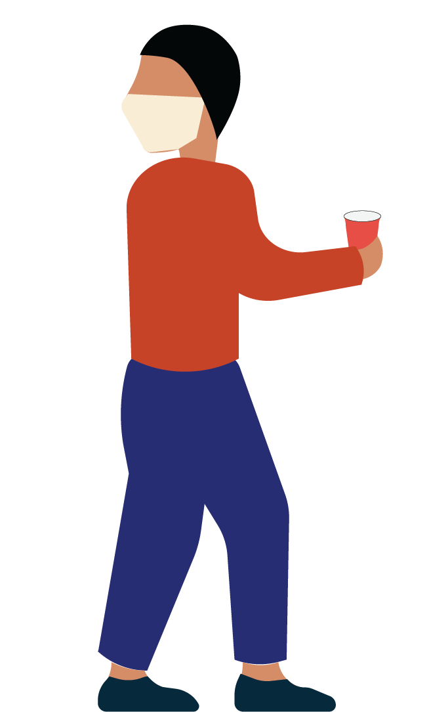

Face masks are nothing new for Weinberg first- year Kaili Wegener. In fact, she started wearing them when she was just 12 years old.
After she was diagnosed with Hodgkin’s lymphoma, a rare cancer of the lymphatic system, masks became a part of Wegener’s routine. The disease compromised her immune system, making exposure to even common viruses dangerous. Although Wegener has now been cancer-free for nearly seven years, her health remains a primary concern.
Since arriving on campus this winter, Wegener has been taking multiple precautions to avoid putting herself and others at risk of COVID-19: She eats meals in her room, avoids any large gatherings and wears two masks in public. Still, she says those measures don’t always feel like enough.
“I’ve been hearing things about parties,” Wegener says. “That is really concerning to me and extremely disheartening on a personal level as a student here. Partying during a pandemic — I just don’t think there’s any justification for that. It’s scary.”
Following undergraduates’ return to campus between Jan. 3 and Jan. 11, COVID-19 positivity rates have hovered between 0.1% and 1.1%. The school saw its biggest peak between Feb. 19 and Feb. 25, when 44 undergraduates tested positive for the virus. Northwestern’s guidelines currently mandate weekly testing requirements for those living off-campus and on campus. Those living in on-campus housing must follow Northwestern’s COVID-19 policies.
Even so, some students feel that the rules, as well as their enforcement, have room for improvement. Medill first-year Joanne Haner is particularly concerned about safety inside dining halls, where students are allowed to remove their masks to eat together. Haner says she feels more comfortable eating in her dorm’s basement.
“I’m definitely a little bit surprised at how lenient the dining hall is,” Haner says. “I’m happy about it because there’s a sense of normalcy, but at the same time, it doesn’t really make sense. I know my friends at other schools, all their meals are grab- and-go. I like being able to socialize with my friends, but at the same time, it’s not super COVID-safe.”
According to Julie Payne- Kirchmeier, vice president of Student Affairs, dining hall procedures have undergone multiple adjustments over the past two quarters, from de- densified seating and reusable Ozzi takeout containers to seat reservation systems. After undergraduates returned for the winter, Payne- Kirchmeier says staffers noticed that some students “weren’t necessarily adhering” to capacity guidelines in certain areas of the dining halls, which led to further seating restrictions in booth areas.
Still, students like Haner who want to avoid the dining hall face a dilemma: They aren’t sure where they can and can’t eat. “The RAs are very inconsistent about things,” Haner says. “Our friend got written up for eating in the basement alone. But then we texted our RA, and we got written confirmation that we were allowed to eat there.”
“Partying during a pandemic — I just don’t think there’s any justification for that. It’s scary.”
Kaili Wegener, Weinberg first-year
Medill first-year Ryan Choe has also noticed that in situations where rooms are above their specified capacities, RAs often don’t take head counts or administer warnings.
“It almost indirectly encourages that behavior, because if you don’t draw the line, then students don’t really know where to stop,” Choe says.
To Choe, the system is like a game of telephone: The University sets standards and passes them down to administration, which eventually relays expectations to RAs. In the end, messages can become garbled, potentially giving students the wrong impression.
“I think the hardest thing about being an RA right now is having the guts to call kids out,” Choe says. “That’s not a position that anyone wants to find themselves in.”
According to Claire*, who has worked in university housing, Choe’s assessment is mostly accurate. Last quarter, she says, communication from the University was often limited and confusing for workers in Residential Services. During the early days of the Wildcat Wellness modified quarantine, many employees weren’t even aware that a curfew existed for students. Claire* frequently had to defer to her own judgment to make decisions.
For RAs, Claire* says that their job during the pandemic is more complicated than simply policing their peers. Many rely on their positions for living space, food and income, and they must weigh those needs against their own health and safety. While knocking on doors to check capacity limits, they have to consider the possibility that several students could be inside the room with their masks off, putting them directly in harm’s way.
“You never want to be in a position where you have to choose between your living situation and job and your security and health,” she says.
On the morning of Jan. 21, students awoke to find a skull and the word “superspreaders” spray-painted on the brick exterior of the Phi Kappa Psi fraternity house.
The graffiti followed an unsanctioned party hosted that Tuesday by Phi Kappa Psi that violated the Interfraternity Council (IFC)’s Code of Conduct. According to a statement from the IFC Standards Board, the chapter was found responsible for “hosting an unregistered social function, for poor representation of the IFC community, for misconduct in the recruitment process, for possession of alcohol on chapter premises and for violation of the IFC’s public health-oriented social event ban.”
Following the event, the IFC fined Phi Kappa Psi $3,500 and banned all of its recruitment activities until the end of spring 2021. IFC President Nick Papandreou says that students who acted immediately to report the event were critical to the success of the investigation.
“Phi Psi was one of those cases where the reports came in while the event was taking place, so we could intervene accordingly,” Papandreou says. “But in general, everything we get we investigate as much as we can, and if there’s sufficient evidence, we move on with our accountability process.”
When Papandreou received reports on the night of the party, he went to the house to see the event for himself. Once he realized that there were more than 10 students present, he took pictures of the party as it was occurring. was occurring. Later, Phi Kappa Psi provided him with a list of attendees, and he was able to conduct interviews with some of those individuals in order to determine the details of the event. But without photo evidence or a source willing to come forward and explain the details of a gathering, Papandreou says, the process becomes much more difficult.
“If there’s not enough proof, facts, evidence, it makes it very hard to go to a trial like we did with Phi Psi,” Papandreou says.
The IFC has received and investigated reports from students about other events this quarter, but Phi Kappa Psi is the only Greek house that has been sanctioned thus far.
While it’s within the IFC’s purview to sanction fraternities, they have no control over how the University disciplines the students involved in a party. However, Payne-Kirchmeier says there have only been a few reports of gatherings since the beginning of the school year.
“Have we gotten some reports? Sure. Have there been a lot? No,” Payne- Kirchmeier says. “Process- wise, any community member can file a general concern report, and that comes over to our Dean of Students office. If it has specific information in it, such as day, location, maybe a picture or two and an address, we follow up right away.”
Anna*, a Weinberg second-year living off- campus this quarter, has attended several parties and dinners with multiple friend groups since classes began. Following one particular night of socializing, she and most of her friends contracted COVID-19.
“We took the risk and decided to go to social gatherings, knowing that there was a chance we could get [COVID-19],” Anna* says. “We were all kind of accepting of that.”
After learning that they had the virus, Anna* and her friends quarantined separately for two weeks. Now that they have antibodies, she says, they feel even more comfortable hanging out in larger groups. “We wanted to have a fun college experience,” Anna says. “Even if we were super careful, there would still be the risk of us getting it from our apartment building or going out to restaurants. In the high-stress environment of school, we wanted to be able to go out to eat and do something fun on Friday nights.”
When she started to receive complaints about her friend group’s behavior from other community members, Anna* was somewhat surprised.
“People were kind of coming at us and saying things like, ‘There’s a pandemic, why are you going out for dinner?’ or ‘People are dying; you’re killing people; why are you hanging out with anyone other than your roommates?’ It was definitely hard to hear that because I was trying to emphasize the role that our mental health was playing in our decisions to socialize,” Anna* says.
Sarah*, another Weinberg second-year living off- campus, also says her stressful workload and isolation have made her feel compelled to socialize. She lives with several roommates and has been seeing a larger group of about eight friends who sometimes invite other acquaintances to join them.
“It’s hard to only do schoolwork and not see other people,” Sarah* says. “I think there is a way to see other people and still be responsible about it. We’ve kind of just been seeing the same group of people to get a change of scenery and socialization. Otherwise, I would literally go stir-crazy.”
According to Eli Finkel, head of Northwestern’s Relationships and Motivation Lab, many adolescents may see the rewards of socializing as greater than the risks of contracting COVID-19.
“The benefits of socializing — social bonding, sex — remain intact. In fact, insofar as one has been feeling socially deprived, the benefits are more powerful than usual,”Finkel says. “More importantly, the benefits are immediate and concrete (the fun of beer pong, the pleasure of sex), whereas the costs are delayed and abstract (there’s a small chance that this get-together will spread the disease).”
Finkel says that, as social animals, loneliness can affect humans deeply; because college is a time when most students broaden their social circles and seek out sexual relationships, it makes sense that students have been attempting to socialize extensively. Still, he says, it’s possible to have rewarding experiences without violating COVID-19 guidelines.
“The vaccines look very promising, and life is long,” Finkel says. “There’s a good chance that this summer will feel reasonably normal. On the other hand, people will continue to die in these next few months, and it’s within our power to decrease the odds that more people die.”
When Medill first- year Jack* arrived on campus, he and his roommate agreed to be “somewhat relaxed” about following COVID-19 guidelines. However, it quickly became clear that his roommate had a different understanding of“relaxed.”
Often, Jack* would return to his room to find that his roommate had invited friends over to hang out without masks, and they would remain there late into the night.
“It’s a little bit disturbing knowing that we’re existing with so many other people, all of whose lives and health are at risk because of all of our actions,” Jack* says. “It’s tough, not wanting to be frank and confrontational about it, but also making clear that I am uncomfortable with the level and nature of activity that’s occurring.”
When Jack*’s roommate continued to allow larger groups of friends into their room, Jack* decided that he needed to express his discomfort with the situation.
“It’s a little bit disturbing knowing that we’re existing with so many other people, all of whose lives and health are at risk because of all of our actions,”
Jack*, Medill first-year
“Now I feel more able to put my foot down or just discuss something that does make me uncomfortable,” Jack* says. “Our relationship is still really solid. It’s tough, but there’s no one to really point fingers at in this situation, because I know that if people are being irresponsible, I have the obligation to report it, be active about it and try to fix the situation.”
Wegener believes the idea that students like Jack* are asked to surveil and report their peers is a failure on the part of the University.
“I shouldn’t have to report people who are having parties,” Wegener says. “I think that that’s the role of the institution.”
Other universities, including Yale University and the University of North Carolina, have faced backlash for using systems that require students to report each other as a means of keeping the virus in check. Such measures can allow for the prevention of gatherings or guideline violations in the short term. However, they may also create tension amongst students who feel that they need to police the behavior of others to maintain campus safety. According to Tim Bono, a lecturer in Psychological & Brain Sciences at Washington University in St. Louis, shaming in these situations can be counterproductive.
“If you point a finger at them and say, ‘Oh, you shouldn’t be doing that,’ or you start to shame them, that is likely to backfire,” Bono says. “You’re going to be much more successful by gently opening up a conversation about the person’s values and goals and drawing attention to the ways that their current behaviors might not be conducive to those outcomes.”
Third-year Jess* discovered just how damaging disagreements over the pandemic could be when she moved into a house with five friends this fall.
During their time living together, Jess* was constantly on edge about the possibility of contracting COVID-19. She had a job that required her to come into contact with small children and elderly members of another family, and she didn’t want to endanger them. However, her roommates had come to a separate agreement to “make the most” of their Fall Quarter.
Jess* frequently expressed her discomfort about the number of people invited to the house without masks, the size of her roommates’ friend groups and the unsafe indoor activities they were participating in.
“I said, ‘I’m really unhappy. I would honestly rather be at work than be here sometimes, because I don’t feel heard or seen,’” Jess* says. “I wasn’t able to stand up for myself because they were all in agreement that what they were doing was fine.”
For students experiencing similar situations, Jess* says, health has to be the top priority.
“When you are living somewhere, that is your safe space,” Jess* says. “You should feel like you can exist freely and without fear of bodily harm. If you are in a position where you no longer feel that your body is safe, you are entitled to leave.”
The tipping point came when Jess*’s roommate invited another friend who had been socializing extensively into their home without a mask. Jess* knew she had to make a decision.
“I grabbed my things in the middle of the night and left.”
*Names have been changed to preserve anonymity.